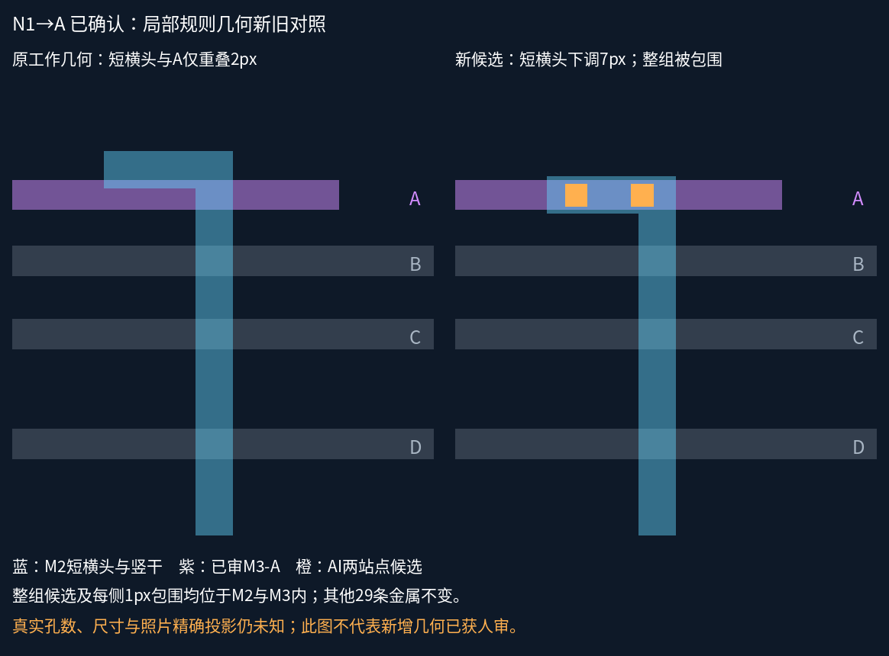
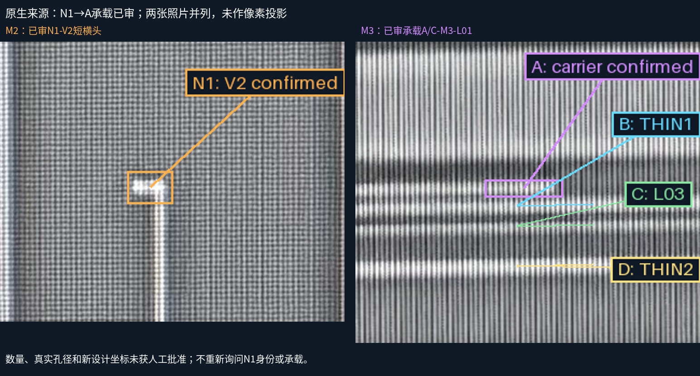

N1→A：连接已审，局部几何候选已检查
用户原文：N1接A。M2短横头下调7设计像素，横向位置、宽度、原生锚点及其他29条金属保持。新增1组两站点AI候选；原4条连接与32个设计孔保持。
新旧局部对照

同一模型切换图层
连续走廊完整工作页与全部原生视图
来源照片（独立坐标）

质量边界
| 项目 | 状态 |
|---|
| N1 V2身份、M2→M3-A承载 | 已审 |
| 完整声明设计阵列及包络的两侧包围 | PASS |
| 孔数、尺寸、排列及新坐标的人审 | 未知／候选 |
| 来源孔组穷尽、精确投影、真实PDK DRC | 未资格化 |
| 共同GDS采用与全网导出 | 未放行 |